Inhalt Index DeskTop Bronstein

 Numerische Mathematik Nutzung von Computern Anwendung von Computeralgebrasystemen Mathematica
Numerische Mathematik Nutzung von Computern Anwendung von Computeralgebrasystemen Mathematica


Mit Hilfe der Methode der kleinsten Quadrate (s. auch Abschnitt Approximation im Mittel, Diskrete Aufgabe) kann Mathematica die Anpassung von ausgewählten Funktionen an einen Datensatz durchführen. Die allgemeine Anweisung dafür lautet:
| 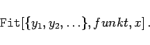 | (19.287) |
Dabei bilden die yi die Liste der Daten, funkt ist die Liste der ausgewählten Funktionen, die die Anpassung bewerkstelligen sollen, und x steht für den zugehörigen Wertebereich der unabhängigen Variablen. Wählt man funkt z.B. als 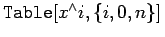, so wird die Anpassung durch ein Polynom n-ten Grades durchgeführt.
| Beispiel |
|
Es sei die folgende Liste von Daten gegeben: 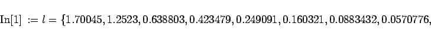
0.0302744, 0.0212794}
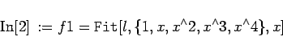
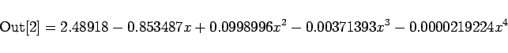
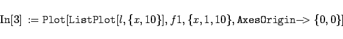
Für die gegebenen Daten ist diese völlig ausreichend. Sie ergeben sich aus den ersten vier Gliedern der Reihenentwicklung von 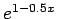. |
Mathematica stellt spezielle Algorithmen für die Bestimmung von Interpolationsfunktionen zur Verfügung. Diese werden als sogenannte 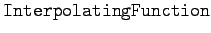 Objekte dargestellt, die ähnlich wie reine Funktionen aufgebaut sind. Folgende Anweisungen sind vorhanden:
| 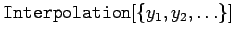 | erstellt eine Näherungsfunktion mit den Werten yi für die jeweiligen xi=i als ganze Zahlen |
| 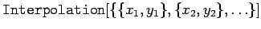 | erstellt eine Näherungsfunktion für die Punktfolge (xi,yi) |
Anstelle der Funktionswerte yi kann eine Liste aus Funktionswert und spezifizierten Ableitungen an der jeweiligen Stelle eingegeben werden.
| Beispiel |
|
Mit 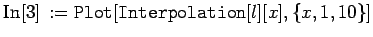 erhält man die folgende Abbildung: Man erkennt, daß Mathematica präzise Nachbildung der Datenliste liefert. |